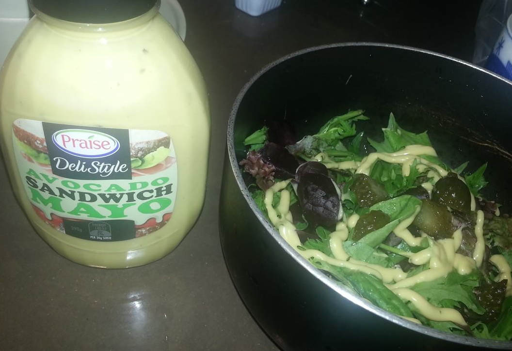

Take bavarian tasting platter at Bavarian Bier Cafe Parramatta
- Location at google map
- "platter" means different kinds of foods in one big platter
- sausage is good
- $31
my salad
As my friend said,this avocado sauce is better: 
南瓜粥作法
- 三杯米,南瓜一个
- 南瓜切小块,越小越好,因为不打算煮太长时间粥,而南瓜要完全溶解
- 南瓜切皮的诀窍在于南瓜开水泡两分钟.参考阿基师教你切南瓜皮
- 米要冷水浸泡20分钟
- 放入南瓜和米后,煮开,然后到入麻油(防止粘锅底),小火烧一小时,不断搅拌粥
- 取决于口味可以加糖
牛肉面作法
- 原料:米粉,韩国人超市买牛肉片,Massel的牛肉粉
- 牛肉开水烫过
- 加入面,牛肉粉拌入
- 打入一个生鸡蛋
How to manage emacs packages
I have 168 packages installed through Emacs package manager. And I shared my emacs.d at github.
So these days I have been spending much time on solve the issues for people who use my .emacs.d.
The root cause of most issues is the packages downloaded from melpa are not stable enough.
That's understandable because packages hosted at melpa are built automatically from developers' git repositories.
Now here is my solution:
- I use more stable packages from other repositories if possible.
- I use whitelist to explicitly list the packages I want to install from melpa.
White list because although packages on non-melpa are more stable, there are still some exceptions.
For example, the package "erlang" exists both in melpa and marmalade. But only the version at melpa is usable.
Now I need show you the code. See my init-elpa.el at github for configuration. Especially the code related to variable "melpa-include-package".
Use `git send-email' at ubuntu
When I try to use `git send-email' at ubuntu 13.04, I get error message some perl modules are missing.
So here is one line command to install all missing perl modules:
sudo cpan Error Net:SMTP:SSL MIME::Base64 Authen::SASL
One liner bash to create/update playlist for mpd
I put all my audio files in ~/Music.
The below script create a playlist in m3u format and ask mpd to load it:
cd ~/Music;find . -name '.mp3' -o -name '.flac'|sed -e 's%^./%%g' > all.m3u;mpd ~/.mpd/config;mpc clear;mpc load all.m3u;mpc update
Here is content of my ~/.mpd/config which is basically only a copy from official sample configuration:
See the mpd.conf man page for a more detailed description of each parameter.
music_directory "~/Music"
playlist_directory "~/.mpd/playlists"
db_file "~/.mpd/mpd.db"
log_file "~/.mpd/mpd.log"
pid_file "~/.mpd/mpd.pid"
state_file "~/.mpd/mpdstate"
How to install Emacs source code under Ubuntu
Only one command:
sudo apt-get install emacs24-el
How I locate that package emacs24-el:
sudo apt-get install apt-file;sudo apt-file update;
apt-file search help.el.gz
BTW, I assign hot key "C-h C-f" to command "find-fuction" which "Find the definition of the FUNCTION near point".
How to avoid Repeated Strain Injury when using emacs by re-assigning hotkeys
I've read all the Emacs RSI related articles from the internet.
Typical solutions are:
- buy special hardwares
- remap ctrl key (because Emacs users press Ctrl key too often)
- use Vi key binding
- other Emacs keybinding with some hacking
- voice input
I will disscuss the third item "use Vim key binding" because there is still room to improve.
Here is my observation. Even I use Vi keybinding, there are top three frequently pressed keys which may hurt my left hand: "ESC", "C-x", "C-g"
These top three need me move my left hands too often. That may be the problem of RSI. In this case, A little knowledge of Vim will help.
In vi, we use key combination start with <leader> key. The leader key is actually the comma key ",".
As you can see, comma key is close to the right hand fingers. So using key combination with leader key as the first key to press will give more spare hot keys to replace "ESC", "C-x" and "C-g".
The princple here is DO NOT move hands at all. Following this example, I can figure out many practical solution.
For example, by using evil and evil-leader. With hot key prefix "C-x", I use ",x" to replace. For example, "C-x C-c" is replaced with ",xc",
(require 'evil-leader)
(evil-leader/set-key "xf" 'ido-find-file "xb" 'ido-switch-buffer "xc" 'save-buffers-kill-terminal "jj" 'w3mext-search-js-api-mdn "xz" 'suspend-frame "xvv" 'vc-next-action "xv=" 'vc-diff "xvl" 'vc-print-log )
On some keyboard, the "Alt" key is easy to press because it's big and just under the big thumb. So I can assign some key combination like "M-k" to replace "C-g".
Please note "Alt" and "k" is also close to my fingers. Here is my setup in .emacs:
(global-set-key (kbd "M-k") 'keyboard-quit)
(define-key evil-insert-state-map (kbd "M-k") 'evil-normal-state)
(define-key evil-visual-state-map (kbd ",k") 'evil-exit-visual-state)
(define-key minibuffer-local-map (kbd ",k") 'abort-recursive-edit)
(define-key evil-insert-state-map (kbd "M-j") 'yas-expand)
Some minor modes will re-assign the hot key "C-g", so when I say replace "C-g" with ",k". It may be a bit more elisp code:
;; the original hot key of helm-keyboard-quit is "C-g"
(define-key helm-map (kbd ",k") 'helm-keyboard-quit)
The key point is to understand the princiles instead copy my configuration:
- comma is a good key for hot key prefix, it's used by vi users for ages
- use keys close to fingers (L,J,K,L, for example) in hot keys
- Other keys close to right hand is also useful in key combinations
- Avoid move left hand